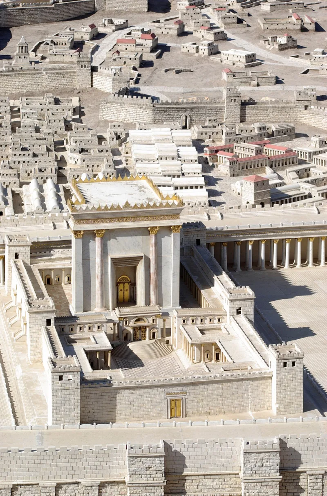
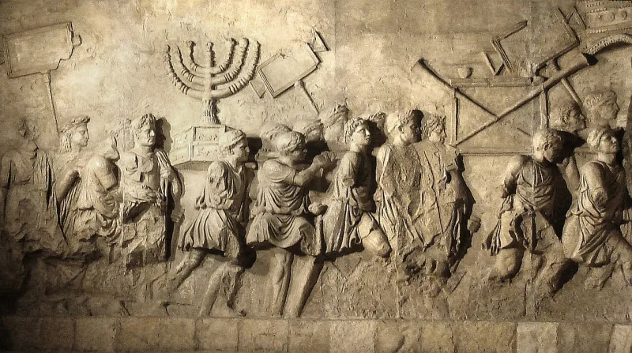
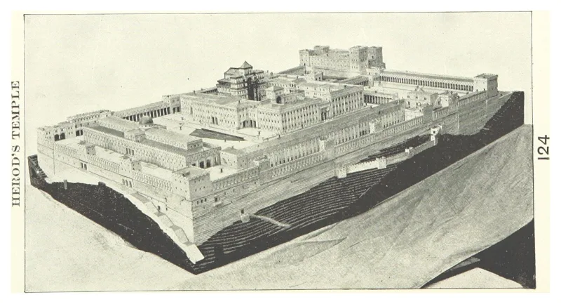

Jewish sources grant this themselves. You can make the point from their own books.
Once a year the high priest drew lots between two goats. A crimson thread was said to turn white when the sacrifice was accepted.
And a lamp in the Temple stayed lit as a sign that God was present. Everyone watched for those three signs.
A passage called Yoma 39b says that for the forty years before the Temple was destroyed, the signs stopped working. The lot no longer came up in the right hand.
The thread stopped turning white. The westernmost lamp went out.
Rome destroyed the Temple in AD 70. Forty years before that is AD 30.
That is the traditional date of the crucifixion.
Very strong, and you never have to argue for it. This is not a Christian source.
It is one of Judaism's own central books, describing its own Temple, and nobody disputes that the passage says this.
You do not have to make a case at all. You only have to ask someone to read it and tell you what they think happened in AD 30.
"Would you look up Yoma 39b with me? I'd genuinely like to know how you read it."



Forty is a stock round number, and the rabbis give their own reason.
They answer that this is aggadah: remembered homily, written down long after the events. 'Forty years' is the stock number for a lifetime, in the Bible and in the rabbis. Think of the wilderness, Eli and David.
The same tractate says the crimson thread had been failing on and off well before that, after Shimon HaTzaddik. And the rabbis give their own reason for God's favour being pulled back. They give it plainly, from inside. The sins of that era. Above all baseless hatred (Yoma 9b), and the graft of the later priesthood.
The passage never mentions a rejected Messiah at all. Here Christians build a dated claim on a stock number, against the text's own stated reason. That is exactly the proof-texting Jewish readers know from missionary tracts.
Conceded that the text says it, but treat it as a hint, not a proof.
Graded Conceded, in the strict sense this section uses. The passage exists, it is Jewish, and it says what it says. The signs of divine acceptance failed for the Temple's last forty years, a span that lands near 30 AD.
But carry the honesty with it. This is a striking convergence, not a proof. The number is schematic. And the passage gives its own explanation, which is not the one Christians want. Present it as something worth explaining, and let your friend do the explaining.